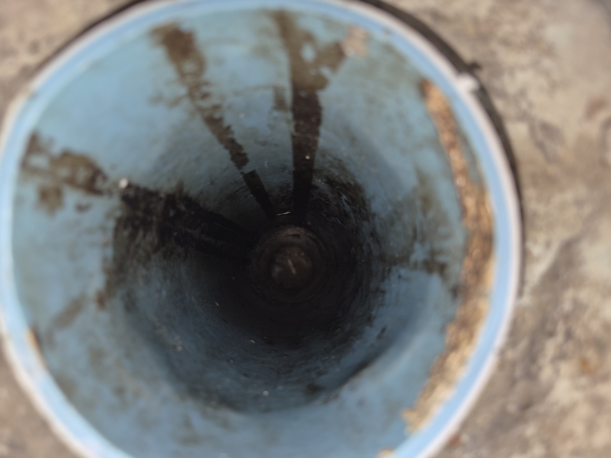
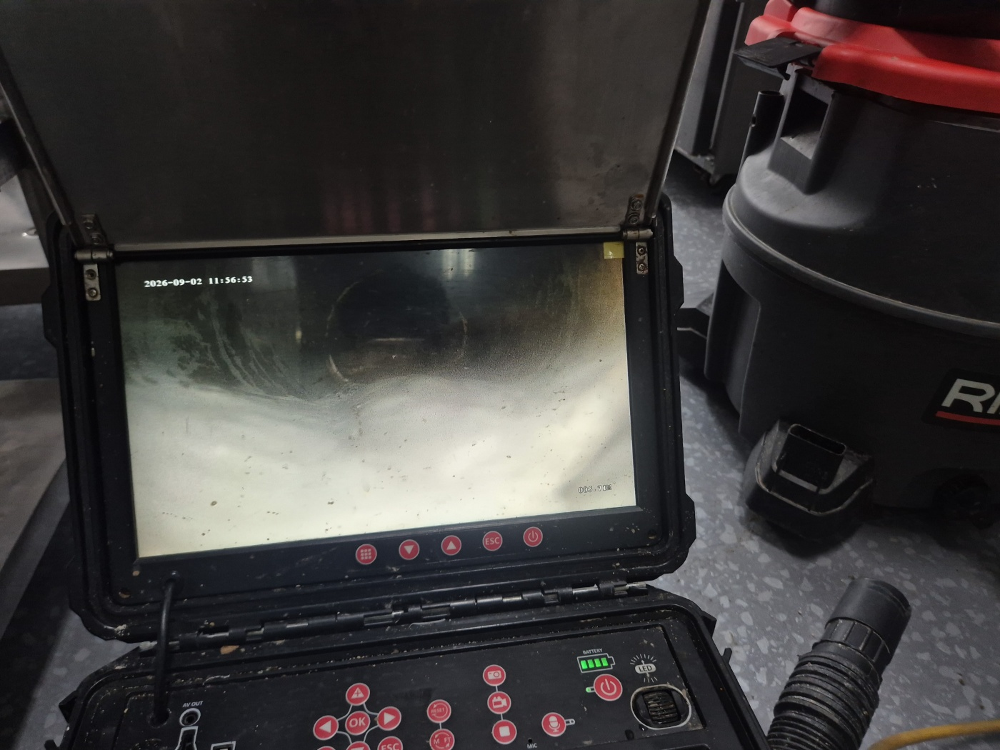
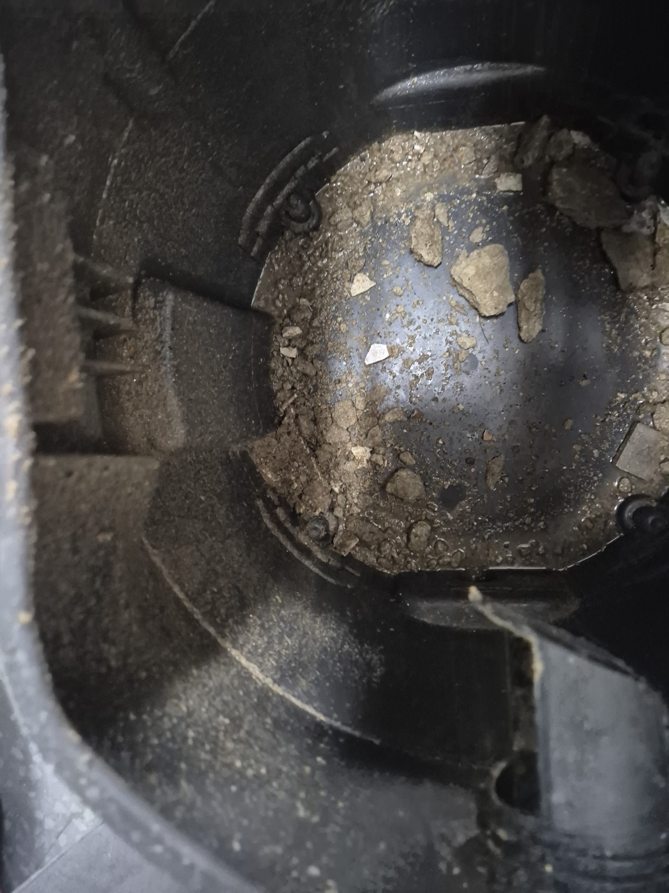
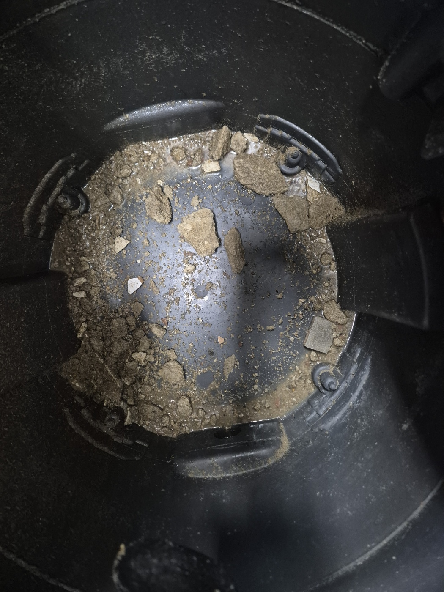

안녕하세요.. 고고고 설비입니다.. 오늘은 평택시에 있는 상가 철거 공사 현장에서 하수구막힘 신고를 받고 다녀온 현장입니다. 철거 작업 중이던 사장님이 갑자기 물이 안 빠진다며 다급하게 연락 주셨어요.
도착해보니 철거 공사가 한창 진행 중인 상가였는데, 바닥이며 벽이며 철거 잔해가 여기저기 쌓여있었습니다. 공사 과정에서 나온 콘크리트 잔해와 돌가루가 배관 안으로 흘러 들어가 완전히 막혀버린 상태였어요.
정확히 어느 지점이 막혔는지 확인하려고 내시경 카메라를 배관 안쪽으로 넣었습니다. 뿌옇게 먼지가 낀 것처럼 화면이 흐려질 정도로 잔해가 쌓여있는 게 확인됐고, 카메라를 밀어 넣을 때마다 딱딱한 게 부딪히는 느낌이 들었어요.

일반적인 이물질과 달리 콘크리트 잔해는 물러지지 않기 때문에, 대형 셕션기를 배관 입구에 연결해서 안에 쌓인 콘크리트 잔해와 돌가루를 강하게 빨아들이기 시작했습니다.
셕션기 통 안을 확인해보니 콘크리트 조각과 돌가루가 한가득 빨려 들어와 있었습니다. 손으로 만져보면 시멘트처럼 딱딱하게 굳어있는 조각들도 섞여 있었어요. 철거 공사 중에는 이런 잔해가 배관으로 유입되기 쉬워서 각별한 주의가 필요합니다.


작업을 마치고 물을 내려서 배관이 정상적으로 뚫린 걸 확인하고 마무리했습니다. 사장님도 다행이라며 안도하셨어요. 철거나 인테리어 공사를 앞두고 계시다면, 배관 입구를 미리 비닐이나 마개로 막아두는 것만으로도 이런 막힘을 예방할 수 있습니다.
고고고 설비는 주택, 아파트, 원룸, 상가, 공장의 생활 하수 오수 배관을 관리해 주는 업체입니다. 고고고 설비에 전화 주시면 친절상담 정확한 진단 확실한 해결로 보답해 드리겠습니다!!